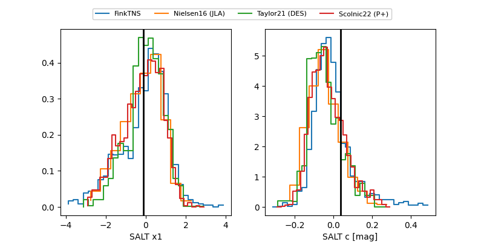

FINK: ZTF25abmtvgm
Lasair: ZTF25abmtvgm
ALeRCE: ZTF25abmtvgm
TNS: 2025whx
YSE: 2025whx
ZTF25abmtvgm (ztf,fink)
2025whx (tns,yse)
equatorial (ra, dec) = (327.5624,-13.36716)
galactic (l, b) = (41.6717,-45.60252)

last atlasc=19.15, atlaso=19.08, ztfg=19.75, ztfr=19.25
2 atlasc, 3 atlaso, 34 ztfg, 34 ztfr detections